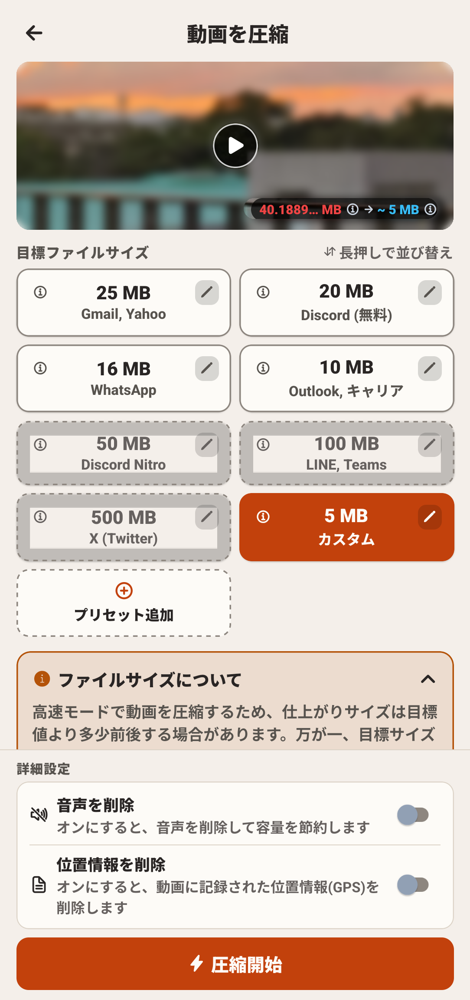
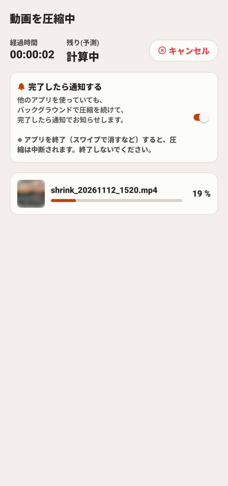
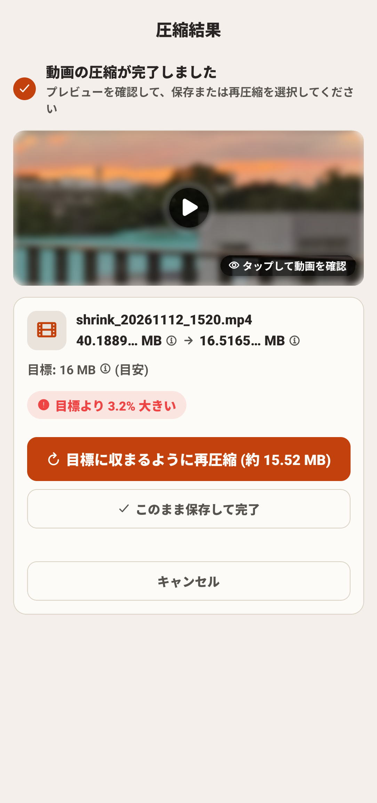

📖 この画面でできること
「動画の結合」は、2本以上の動画を選択して、お好みの並び順でシームレスに1本の動画ファイルへと繋ぎ合わせる機能です。



🚀 結合の基本ステップ
結合したい動画を複数選択する
ホーム画面で動画を選択する際、結合したい複数の動画（2本以上）をタップしてチェックを入れます。
選択が完了すると、自動的に「動画を結合」画面へと遷移し、選択した動画の一覧がリスト表示されます。
ドラッグ操作で再生順序を並び替える
リスト内の各カードの右端にあるドラッグハンドル（三本線マーク）を指で長押ししながら、上下にドラッグします。
上から下への並び順で動画が繋ぎ合わされます。不要な動画がある場合は、カード横の削除ボタン（✕）を押してリストから外すことも可能です。
結合前の通しプレビューで確認する
画面上部の動画プレイヤーの再生ボタンをタップすると、並び替えた順番通りに動画が連続再生されます。
シーンの繋ぎ目や全体の長さに違和感がないかを事前に確認できるため、無駄な結合待ち時間を減らすことができます。
「⚡ 結合開始」をタップする
画面最下部の青い「⚡ 結合開始」ボタンを押すと、結合処理が始まります。
進行バーでエンコードの進み具合が表示されます。圧縮と同様、WorkManagerによるバックグラウンド処理に対応しているため、処理中に他アプリを操作していても通知で完了をお知らせします。
結合動画の確認とアルバム保存
結合が完了すると結果画面が開きます。全体の合計ファイルサイズが表示され、再生ボタンから仕上がりをフル視聴できます。
「アルバムに保存」をタップすると、スマートフォン内のギャラリーへ結合動画が書き出されます。
❓ よくある質問（FAQ）
Q 結合後のファイルサイズが大きくなった場合はどうすればよいですか？
動画を複数本繋げると再生時間が長くなり全体のファイルサイズも大きくなります。結合完了後、その動画をもう一度「動画の圧縮」機能に読み込ませることで、メールやSNSの送信制限（25MBや100MBなど）へ簡単に圧縮できます。
Q 動画の音声ボリュームが動画ごとに違う場合はどうなりますか？
結合処理時に各クリップの音声ストリームが適切にミキシングされ、途切れることなくスムーズに連続再生されるよう処理されます。
Q 結合前の元の動画ファイルは消えてしまいますか？
いいえ。結合処理は元動画の複製・再エンコードによって新しいファイルを作成するため、撮影した元の動画クリップはそのまま端末内に残ります。